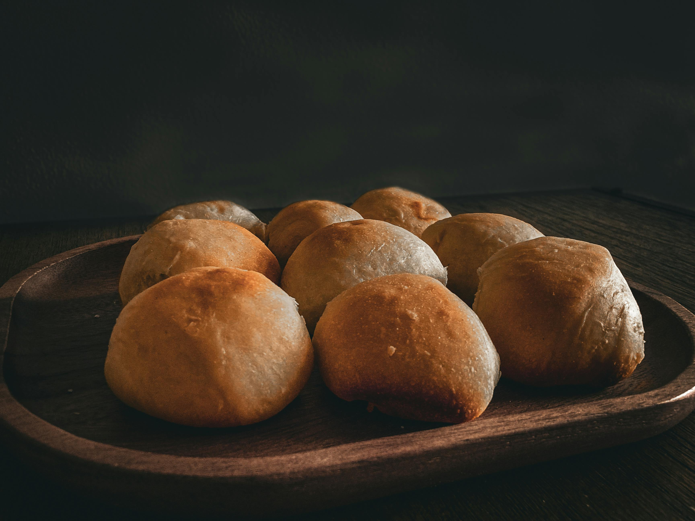

Bread Rolls

Description
Bake these simple white dinner rolls for sandwiches, burger buns or to dunk in soup.
Using only a handful of ingredients, bread-making has never been so easy.
Ingredients
- 500g strong white bread flour (plus extra for dusting)
- 7g sachet fast action yeast
- 1 tsp white caster sugar
- 2 tsp fine salt
- 1 tsp sunflower oil (plus extra for the work surface and bowl)
Steps
- Tip the flour, yeast, sugar, salt and oil into a bowl. Pour over 325ml warm water, then mix (with a spatula or your hand), until it comes together as a shaggy dough. Make sure all the flour has been incorporated. Cover and leave for 10 mins.
- Lightly oil your work surface and tip the dough onto it. Knead the dough for at least 10 mins until it becomes tighter and springy – if you have a stand mixer you can do this with a dough hook for 5 mins. Pull the dough into a ball and put in a clean, oiled bowl. Leave for 1 hr, or until doubled in size.
- Tip the dough onto a lightly floured surface and roll into a long sausage shape. Halve the dough, then divide each half into four pieces, so you have eight equal-sized portions. Roll each into a tight ball and put on a dusted baking tray, leaving some room between each ball for rising. Cover with a damp tea towel and leave in a warm place to prove for 40 mins-1 hr or until almost doubled in size.
- Heat the oven to 230C/210C fan/gas 8. When the dough is ready, dust each ball with a bit more flour. (If you like, you can glaze the rolls with milk or beaten egg, and top with seeds.) Bake for 25-30mins, until light brown and hollow sounding when tapped on the base. Leave to cool on a wire rack.
Home